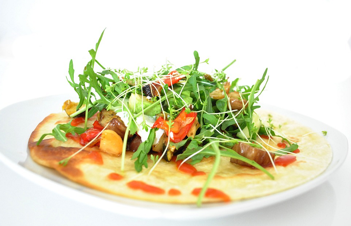

メキシコ料理とドリンク
メキシコ料理で欠かすことができない『トルティーヤ』
トルティーヤとは小麦粉やとうもろこしの粉から作る薄焼きパン（ラップ）の事です。小麦粉から作ったものは『フラワートルティーヤ』と呼ばれ、とうもろこしから作ったものは『コーントルティーヤ』と呼ばれます。下の写真のように大きく膨らむこともありますが、出来上がりは薄い平な状態になります。

この上にペースト状の豆、野菜、お肉、ソースなどをのせて丸めて食べたり、具を入れてから丸めたものにソースをかけてオーブンで焼いたりして召し上がります。
メキシコ料理ではトルティーヤを使って様々な種類の料理がありますので、ここでは代表的な料理をいくつかご紹介したいと思います。
料理の詳細はみどりの『詳細』ボタンをクリック！
Food

